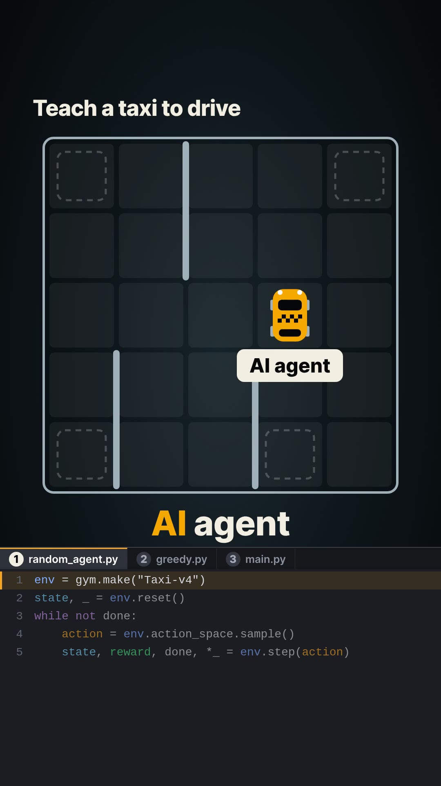
1 · 1.9 s
a tiny AI agent to act like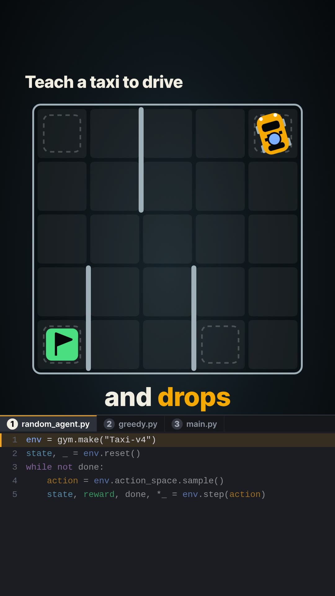
2 · 5.6 s
up a passenger and drops them off at their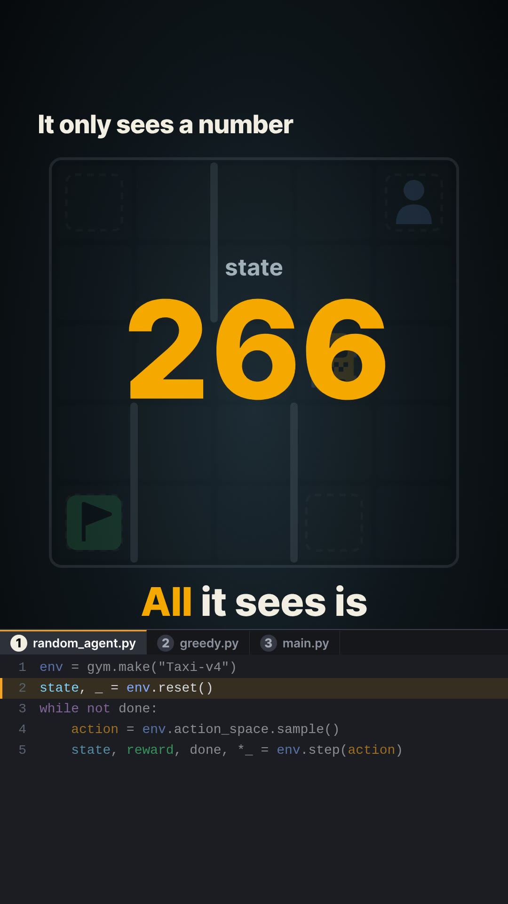
3 · 9.3 s
see this map. All it sees is the state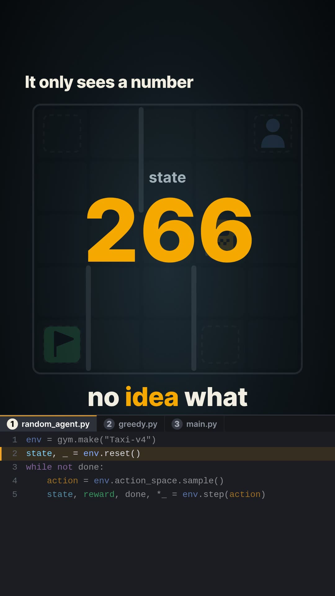
4 · 13.0 s
and it has no idea what that means.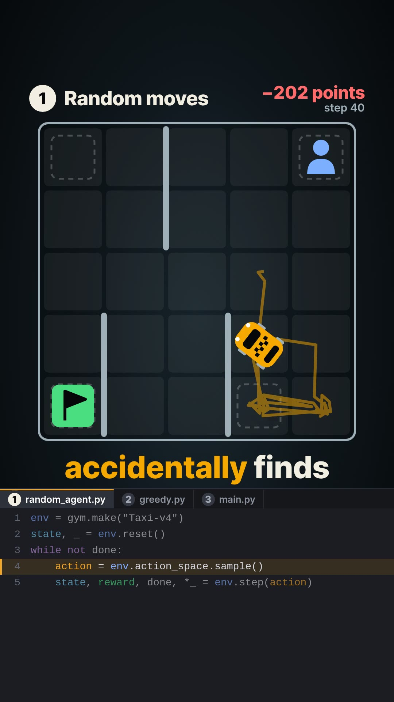
5 · 16.7 s
randomly until it accidentally finds the passenger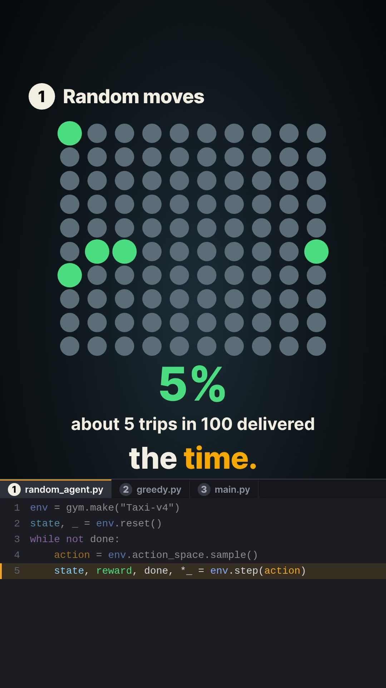
6 · 20.4 s
about 5% of the time. So you give it a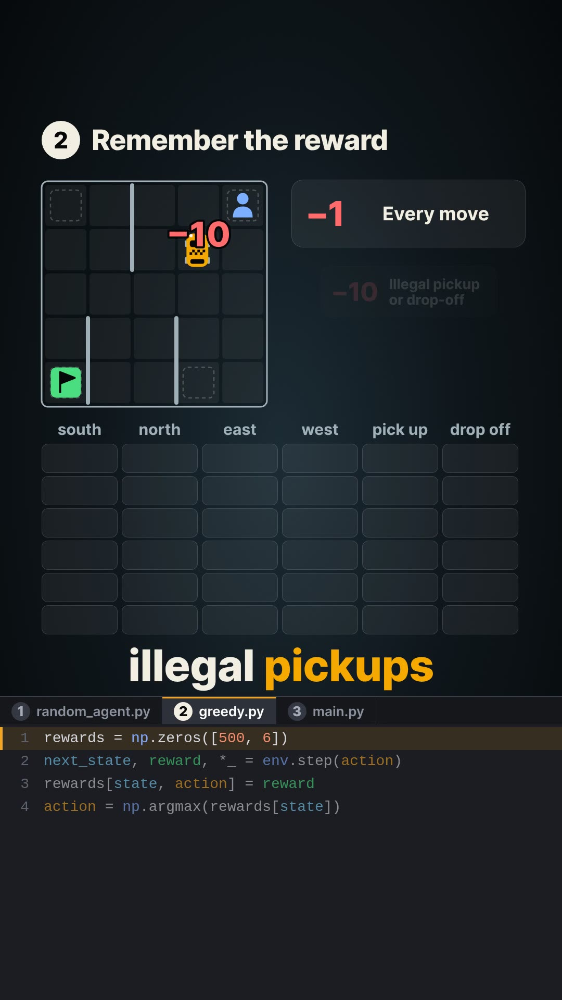
7 · 24.1 s
point, illegal pickups and drop-offs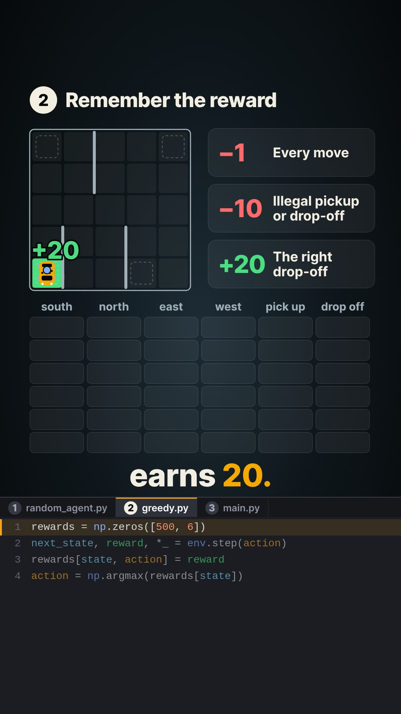
8 · 27.8 s
drop-off earns 20. The agent writes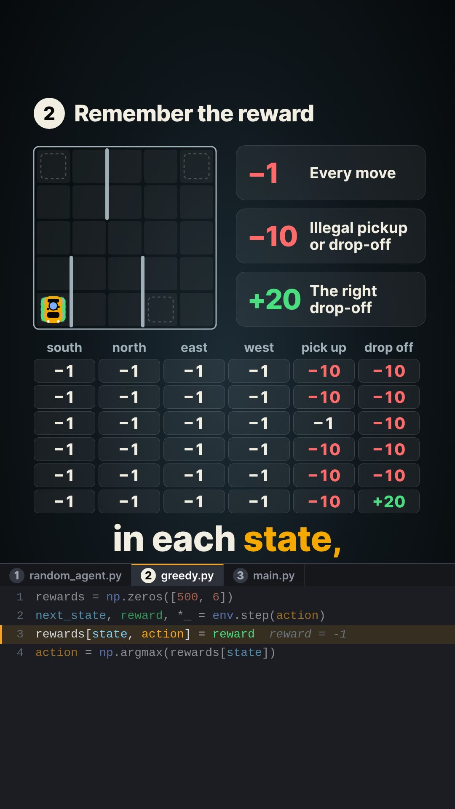
9 · 31.5 s
earned in each state, then picks the best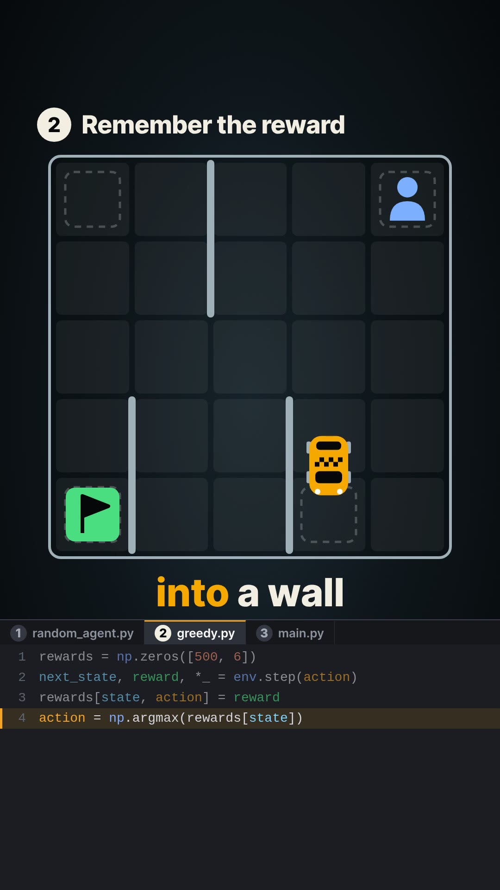
10 · 35.2 s
so it drives into a wall and stays there.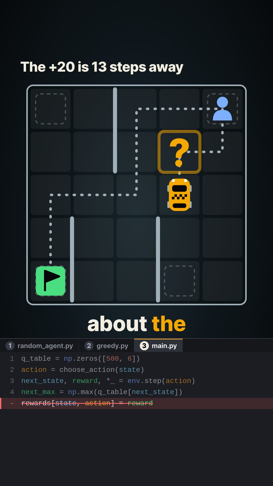
11 · 38.9 s
move know about the 20 points at the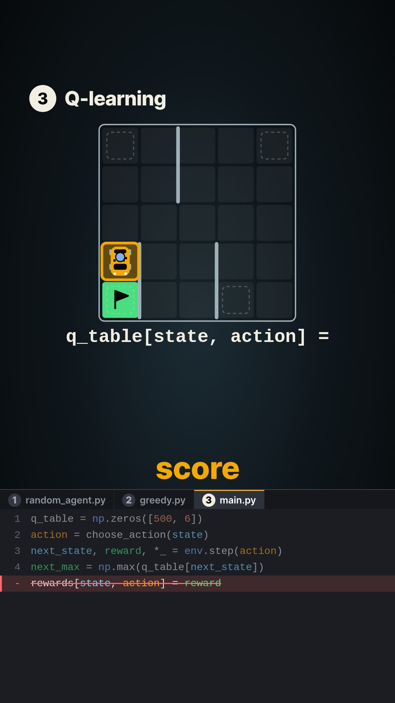
12 · 42.6 s
Each action's score becomes its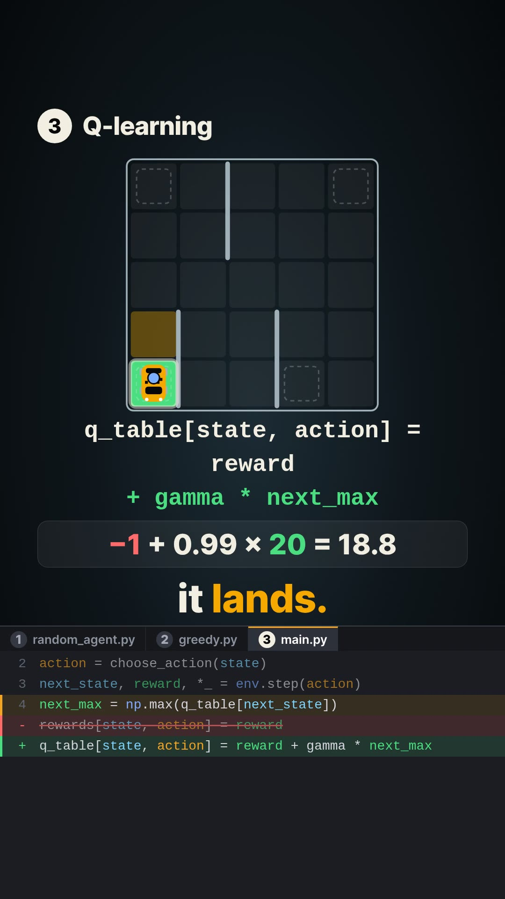
13 · 46.3 s
from where it lands. So the 20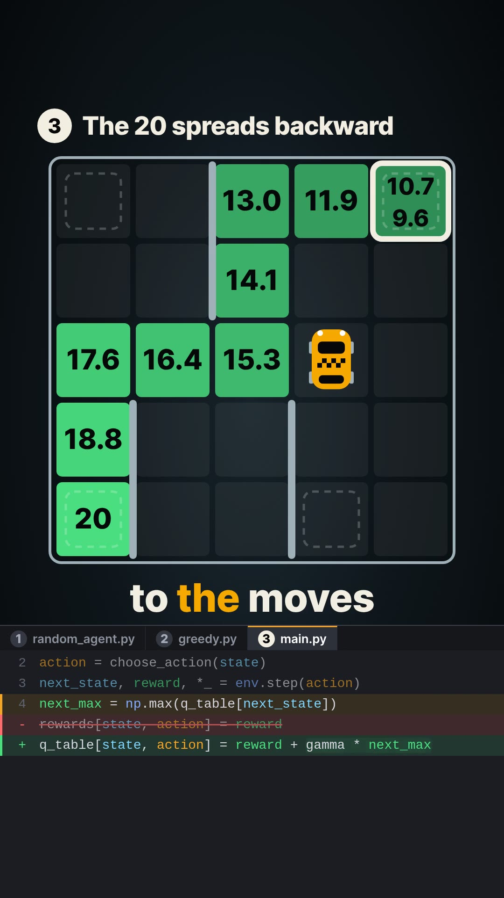
14 · 50.0 s
a time, to the moves that led there.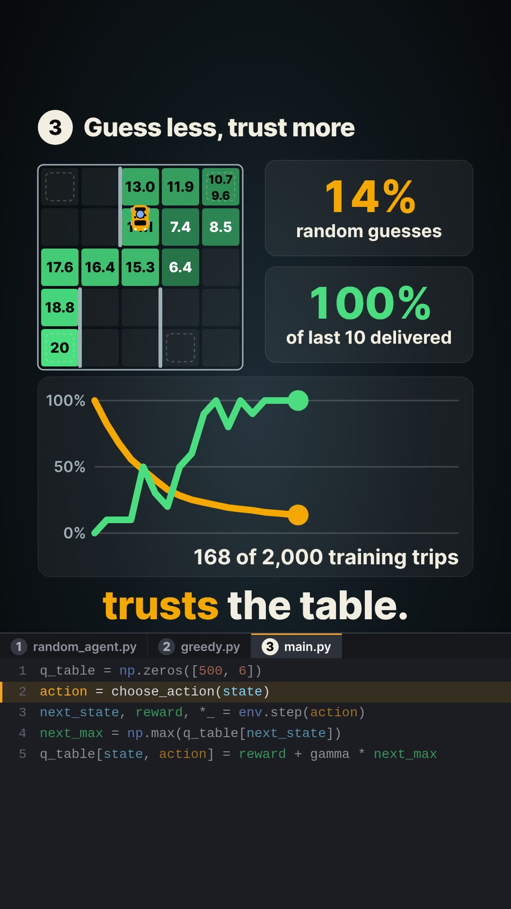
15 · 53.7 s
then it slowly trusts the table.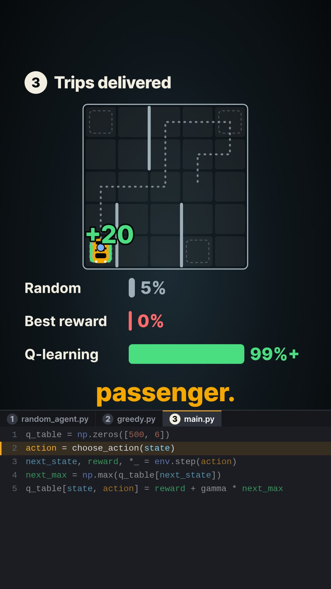
16 · 57.4 s
delivers almost every passenger.